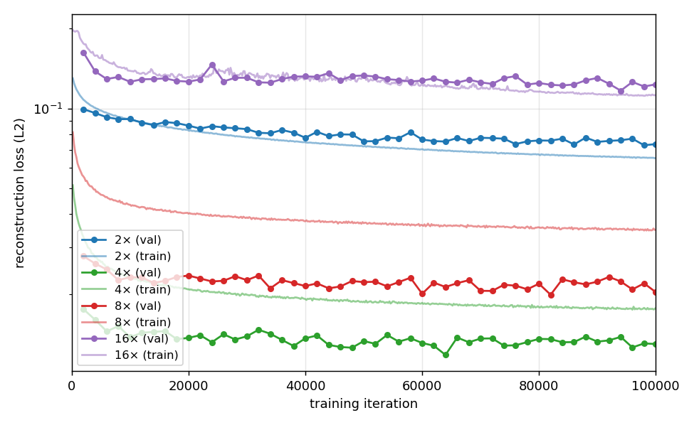
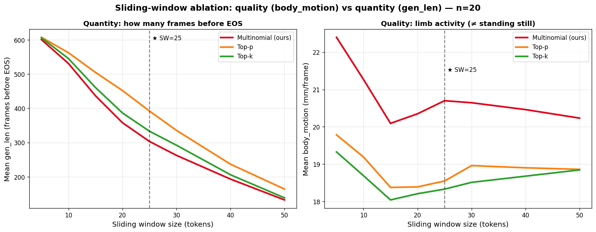
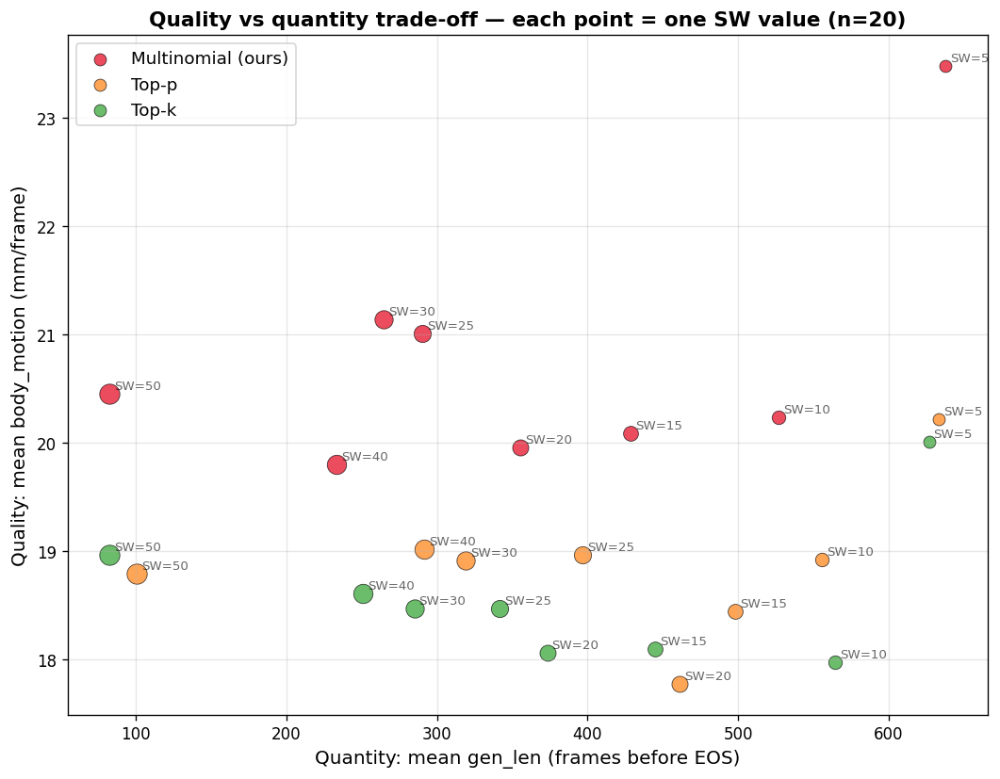

Per-component studies of our decoupled text-to-motion pipeline.
TODO: evaluate our pipeline on the HumanML3D test split and report R-Precision (top-1, top-3), FID, MM-Dist and Diversity using the standard text-to-motion evaluation protocol. This enables direct comparison with prior literature (MDM, MotionDiffuse, T2M-GPT, MoMask, ...).
| method | R@1 ↑ | R@3 ↑ | FID ↓ | MM-Dist ↓ | Diversity ↑ |
|---|---|---|---|---|---|
| Ground truth | - | - | - | - | - |
| MDM | - | - | - | - | - |
| MotionDiffuse | - | - | - | - | - |
| T2M-GPT | - | - | - | - | - |
| MoMask | - | - | - | - | - |
| Ours (RVQ-GPT) | - | - | - | - | - |
TODO: describe the closed-loop experiment, the setup, and the takeaway.
How to inject the path constraint into a T2M-GPT body. We compare several end-to-end
constrained-body variants (linear-interp baseline, xz_io-only path-token
injection, constraint-memory only, and full conditioning combining all signals) against
our decoupled controller-and-recompose design. Trained on the walk+jog subset for
tractable comparison.
| Architecture variant | WP error (m) ↓ | FID ↓ | R-Prec top-1 ↑ | Foot-skating ↓ | Latency (s/clip) ↓ |
|---|---|---|---|---|---|
| (a) Caption-only T2M + linear-interp root path (no controller) | - | - | - | - | - |
(b) End-to-end constrained body, xz_io only (path tokens injected) | - | - | - | - | - |
(c) End-to-end constrained body, constraint-memory only (no xz_io) | - | - | - | - | - |
(d) End-to-end constrained body, full conditioning (xz_io + cmem + heading head) | - | - | - | - | - |
| (e) Decoupled: controller → recompose (ours) | - | - | - | - | - |
Numbers pending; the qualitative story is that decoupling (ours) is the only variant that achieves accurate path following without degrading gait quality.
The body VQ-VAE acts as a temporal autoencoder: it compresses a motion clip into a shorter sequence of discrete tokens, and the autoregressive language model is then trained to predict those tokens. Higher temporal compression yields fewer tokens per clip, which lengthens the effective context the language model can attend to and reduces its computational cost, at the price of coarser temporal resolution at the decoder. We study four compression rates: 2x, 4x, 8x and 16x, where a rate of kx means that each token represents k frames of motion. All runs share the same training recipe (codebook of 2048 entries, batch size 512, learning rate 2e-4, window of 64 frames) and are compared at a fixed budget of 100k training iterations.
A rate of 4x gives the lowest reconstruction error and the highest per-clip code diversity, while remaining within the codebook utilisation range of 2x and 8x. We adopt 4x as the body VQ-VAE for the decoupled pipeline. 2x is retained for variants in which the language model benefits from a denser token stream. At 16x the model collapses on reconstruction: with only four tokens per 64-frame clip, the encoder runs out of latent slots before it can capture motion detail.
| compression rate | frames per token | val recon. loss ↓ | codebook usage ↑ | unique codes per clip ↑ |
|---|---|---|---|---|
| 2x | 2 | 0.073 | 0.683 | 9.8 |
| 4x | 4 | 0.012 | 0.690 | 12.4 |
| 8x | 8 | 0.020 | 0.721 | 7.3 |
| 16x | 16 | 0.117 | 0.705 | 4.0 |

Figure 1. Validation reconstruction loss (log scale) over training iterations for the four temporal compression rates. 4x converges fastest and to the lowest loss.
Beyond temporal compression, the body codec must preserve text alignment and motion quality when it encodes a ground-truth clip and decodes it back. We pass the 6 539 testcases of the Repetition Text-to-Motion split through both a single VQ-VAE (codebook of 2048 entries) and our residual VQ-VAE (4 levels, cosine-weighted, codebook of 1024 entries per level) and evaluate the reconstructions with the same protocol the body GPT will use downstream. The numbers bound from above what the autoregressive body can achieve: any token-level error of the GPT compounds on top of the residual codec error reported here. The residual quantisation lifts R-Precision by roughly nine percentage points on the Overview split (82.48 versus 73.15) and almost twelve points on the Timeline-multi split (82.69 versus 70.99), halves the FID, and shaves about six centimetres per second off the foot-skate, at the cost of one extra level of codebook quantisation; we adopt the residual codec as our body decoder. Lower is better for FID and Skate; higher for R-Precision (top-3) and Contact consistency.
| model | Overview | Timeline single | Timeline multi | |||||||||
|---|---|---|---|---|---|---|---|---|---|---|---|---|
| R@3 ↑ | FID ↓ | Skate ↓ | Cont ↑ | R@3 ↑ | FID ↓ | Skate ↓ | Cont ↑ | R@3 ↑ | FID ↓ | Skate ↓ | Cont ↑ | |
| Ground Truth | 93.95 | 0.000 | 2.11 | 1.000 | 90.04 | 0.000 | 2.04 | 1.000 | 94.49 | 0.000 | 1.93 | 1.000 |
| Single VQ-VAE reconstruction | 73.15 | 0.152 | 26.59 | 0.636 | 59.16 | 0.114 | 27.05 | 0.616 | 70.99 | 0.160 | 25.52 | 0.622 |
| RVQ-VAE reconstruction (ours) | 82.48 | 0.076 | 20.75 | 0.721 | 69.75 | 0.055 | 20.97 | 0.713 | 82.69 | 0.076 | 19.75 | 0.719 |
R@3 is text-to-motion R-Precision at top-3 with the TMR-SOMA-RP text encoder. FID and Skate are computed in the same TMR-SOMA-RP space; Contact is the contact consistency between predicted foot contacts and contacts inferred from foot height and velocity. The reconstruction retains roughly 88 percent of the ground-truth R@3 on the Overview split and 87 percent on the Timeline-multi split. The Skate gap (~20 versus ~2) reflects the codec smoothing high-frequency foot detail; this is a known property of frame-level discrete codecs and motivates the foot-contact re-projection step in our pipeline. At the joint level, the residual codec has a mean per-joint position error of 9 cm, a mean root-XZ drift of 6 cm (p95 = 15 cm), a mean absolute heading error of 1.86 degrees, and a foot-contact F1 of 0.86. The single VQ-VAE under the same protocol nearly doubles those errors (17.5 cm per-joint, 13.8 cm root drift, 7.81 degrees heading) while foot-contact F1 stays essentially tied (0.85 versus 0.86); the geometric ceiling confirms the perceptual gap reported above.
The body GPT predicts a sequence of discrete tokens that the VQ-VAE decodes back into motion; the choice of token sampling strategy turns out to be more consequential than expected. We measure decoder quality on a set of 25 diverse captions (locomotion, direction, curves, transitions, style-gait, and in-place actions), with five samples per caption, and report three complementary metrics: body motion (mean root-relative joint velocity in mm per frame, capturing limb activity independently of root translation), pose diversity (standard deviation of relative pose across time, high when the model produces many distinct poses, low when the same pose is held), and path length (metres travelled by the root). We also report a stuck count: the number of captions out of 25 on which the body motion falls below 5 mm per frame, indicating that the character has stopped moving even though token generation continues.
| decoder | body motion (mm / frame) ↑ | pose diversity ↑ | path length (m) ↑ | stuck captions ↓ |
|---|---|---|---|---|
| Greedy | 7.09 | 0.017 | 3.56 | 19 / 25 |
| Top-p (nucleus) | 14.64 | 0.040 | 6.56 | 6 / 25 |
| Top-k | 14.86 | 0.046 | 6.50 | 3 / 25 |
| Top-p + repetition penalty | 14.85 | 0.046 | 5.83 | 8 / 25 |
| Multinomial (ours) | 19.67 | 0.058 | 7.80 | 0 / 25 |
Aggregate across 25 captions × 5 samples per caption, all 200-frame generations. Multinomial sampling dominates every metric and is the only decoder that never stands still. Sharpened samplers (top-p with repetition penalty, top-p, top-k) look smooth on locomotion captions but collapse to a held pose on roughly a third, a quarter and an eighth of the captions respectively.
Side-by-side renderings of the five decoders on five representative captions. Each clip shows the same skeleton driven by each decoder; the winning decoder (Multinomial, ours) is drawn in red with a star, the others switch to grey at the frame they predict end-of-sequence.
"walks backward"
"crouches and walks"
"dances"
"stretches"
"walks while waving"
The body GPT samples tokens with a sliding window: at every step it keeps only the last SW tokens of context, refreshing the prefix as the sequence grows. The choice of SW trades off two things: the total number of frames generated before the model predicts end-of-sequence (we want this high so the motion is long enough to be useful), and the limb activity preserved over the rollout. Limb activity is measured as the mean magnitude of the per-joint velocity in the character's local frame (mm per frame). A value close to zero means the character has frozen; a non-trivial walking, dancing or stretching motion sits in the 15 to 25 mm/frame range, so within that band higher essentially means “the limbs are still moving like they should”. A separate semantic quality metric per (decoder, SW) is being added in a forthcoming revision (Table 2-style FID against the TMR-SOMA-RP encoder).
We adopt SW = 25, which sits at the knee of the gen-length curve (the model produces about 290 frames before EOS, roughly ten seconds of motion at thirty frames per second) while keeping limb activity essentially at its peak (about 21 mm per frame). Multinomial sampling is the only decoder whose limb activity is insensitive to the window size; top-p and top-k both lose roughly twenty percent of limb activity in the SW ∈ {10, 15} regime, indicating that the tightened token distribution starts holding poses when the context becomes short.

Figure 3. Sliding-window size versus generation length (left) and limb activity (right) for the three sampling decoders. Aggregate over 10 captions and 20 samples per (decoder, SW) cell (4 800 generations total). The dashed vertical line marks our chosen SW = 25.

Figure 4. Quantity versus quality trade-off across the same 4 800 generations. Multinomial points (ours) cluster in a high-quality band regardless of window size.
The table below reports the same four motion-quality metrics as the decoder ablation, now varied along the sliding-window axis with the decoder fixed to our chosen Multinomial sampler. Each cell aggregates 200 generations (10 captions × 20 samples). It answers which window size to pick once the decoder is settled; the decoder ablation above answers the complementary question of which decoder to pick at the chosen window size.
| SW | body motion (mm / frame) ↑ | pose diversity ↑ | stuck count (/10) ↓ | path length (m) | gen length (frames) |
|---|---|---|---|---|---|
| 5 | 23.48 | 0.060 | 2 / 10 | 33.83 | 638 |
| 10 | 20.23 | 0.057 | 3 / 10 | 22.46 | 527 |
| 15 | 20.09 | 0.053 | 2 / 10 | 16.75 | 428 |
| 20 | 19.96 | 0.056 | 2 / 10 | 12.37 | 355 |
| 25 ★ | 21.00 | 0.056 | 1 / 10 | 8.74 | 290 |
| 30 | 21.14 | 0.056 | 2 / 10 | 7.75 | 265 |
| 40 | 19.79 | 0.053 | 2 / 10 | 5.54 | 233 |
| 50 (default) | 20.45 | 0.053 | 2 / 10 | 2.71 | 82 |
Aggregate over 10 captions × 20 samples per cell (200 generations per row), decoder fixed to Multinomial (ours). Path length is reported without a strict arrow: at small windows the model produces 20 to 35 metres of root travel in 6.7 seconds, much of it spurious wandering as the model forgets its own recent context. At SW = 25 the figure tightens to roughly 9 metres of travel in 10 seconds, consistent with a natural walking pace, while limb activity is at its peak (21.0 mm per frame) and the stuck count is at its minimum (1 caption out of 10). The default SW = 50 is too narrow: the model emits end-of-sequence after roughly 80 frames, less than three seconds of motion.